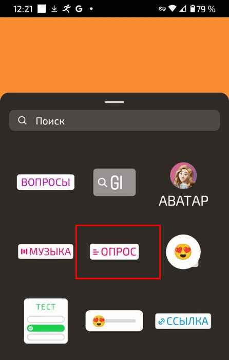
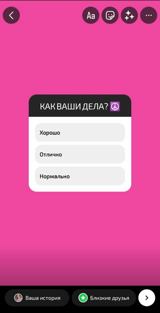
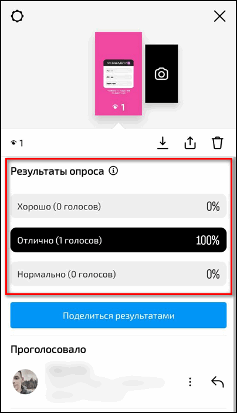
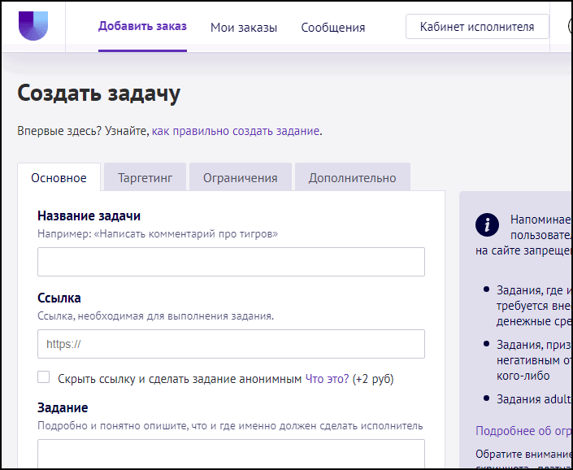
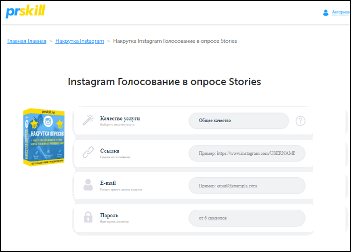
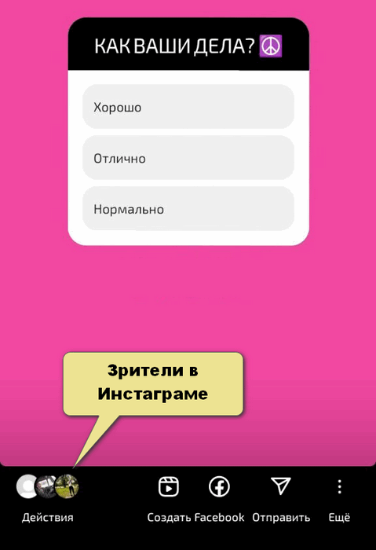
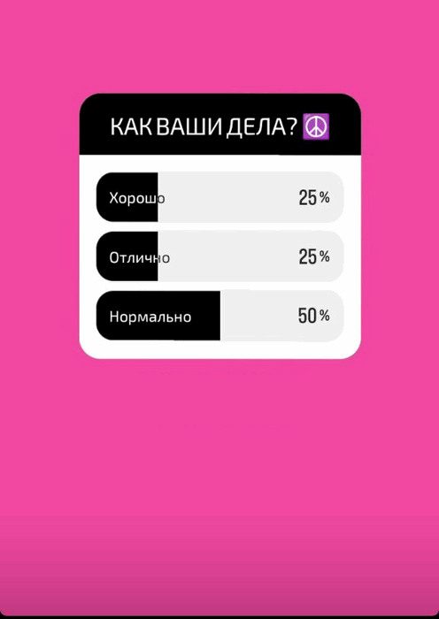

Накрутить голоса в опросе в Инстаграме: ТОП-11 сервисов

Накрутка голосов в опросе Инстаграма* необходима, если у пользователя свой блог или он планирует запустить игру, конкурс. Голосования создаются с помощью стикера в Истории и актуальны только первые сутки.
Как работают опросы в Инстаграме*
Опрос в Инстаграме* - это стикер, который можно добавить при создании Истории. Ответы доступны с помощью вкладки «Зрители» под публикацией. Когда голосование будет окончено, владелец аккаунта сможет посмотреть ответы в Архиве. Создать опрос в Инстаграме*
- Зайти в Истории – выбрать фон из Галереи или сделать снимок.
- Перейти в раздел: «Стикеры» -добавить опрос.

- Написать вопрос – выбрать количество ответов и варианты.

- Опубликовать.

Как провести голосование в Инстаграме*
Кроме обычного способа с опросами в Историях, можно провести голосование более креативными вариантами. Примеры опросов:
- описание к публикации. Комментаторы должны угадать и написать ответ в отклики;
- с помощью видео. Задать вопрос с помощью коротких клипов;
Чтобы привлечь больше участников нужно добавлять субтитры, чтобы пользователи, которые не могут включить звук, также дали ответ.
- «карусель снимков». Опубликовать несколько изображений, написав на них варианты ответов;
- до 10 Сторис с вариантами ответов. Отклики отправляют в личные сообщения.
Так как раздел Reels и Stories более популярны среди пользователей, то такие способы привлекают больше количество участников. Но проверка ответов происходит в ручном режиме: автору нужно самостоятельно читать все комментарии или личные сообщения, чтобы определить победителя.
Стандартный способ оформления с помощью стикера удобен тем, что правильные ответы и участники будут показаны. Автору не придется проверять каждый ответ и сверяться с правильным.
ТОП-11 сервисов для накрутки
Накрутка голосов в опросе Инстаграма* возможна бесплатно лишь в том случае, если на профиль уже подписано свыше 10000 человек или аудитория активная. Иначе голосование могут пропустить или проигнорировать.
#1 UNU.im

На бирже можно создать произвольный заказ, указав в форме ссылку, вариант ответа. В подробной информации заказчик должен описать, что требуется от исполнителя. Выбирая биржу, автор блога или сообщества получает реальных пользователей, которые выполняют задачи с подтверждением. Минимальная цена за выполнение задачи – от 2,50 рублей.#2 PRSkill

Участие в голосовании через этот сервис доступно по стандартному пакету: обычная скорось и оплата в 0,233 за каждого оффера. В PRSkill услуга бывает недоступна, поэтому заказчик может обратиться в техническую поддержку, чтобы получить накрутку. Оформляя нужно указать предполагаемое количество подписчиков, адрес электронной почты, способы оплаты и отправить запрос. После на email придет уведомление о старте накрутки.#3 SMMPrime
Сервис предлагает всего один пакет по голосованиям в Инстаграме*. 24 рубля за 1000 привлеченных исполнителей. Для оформления заказа нужно зарегистрироваться в сервисе, подтвердить учетную запись и после этого сможет отслеживать заказ, создавать новые и оплачивать.
#4 TaskPay
Биржа, где можно оформить любой заказ по накрутке активностей в социальные сети. Это касается и опросов в Сторис Инстаграма*. Средняя цена за выполнение – 0,5 рублей, а если с подтверждением то 1,5. Исполнители реальные пользователи, которые также зарегистрированы на бирже и готовы выполнять задачи.
#5 SMMCode
Также предлагает два типа услуг, разделенных по максимальному количеству привлеченных. За 100 пользователей заказчик заплатит 9,89 рублей. Минимальный объем заказа – 100 ответов, максимальный – от 5000 до 10 000. Для отслеживания заказа нужно указать адрес электронной почты, а также выбрать способ оплаты на странице оформления. Особенность сервиса в том, что оплатить заказ возможно только со счета электронного кошелька или криптовалютой.
#6 PRMotion
Голосования в Сторис разделены всего на два варианта. За привлеченных автор блога заплатит 39,84 рублей, а максимальное количество – до 30 000 в сутки. Запуская задачу в таком сервисе, нужно обращать внимание на лимиты или самостоятельно их выставить, чтобы аккаунт не заблокировали.
#7 MRPopular
Предложена одна услуга по накрутке голосов в опросе Инстаграма*. Максимальное количество в сутки – 10 000, запуск начинается в течение 5 часов. Минимальный размер заказа – 20 штук. За одного привлеченного пользователя – 1,26 рублей. Соответственно по минимальному тарифу заказчик заплатит 25,2 рублей.
#8 SMMNakrutka
Сервис предлагает три типа услуг: нажать по стикеру, выбрать один из вариантов или ответить на неправильный. Цена за «красный-зеленый» - 0,79₽, за стикеры – 0,48₽, за «тест» - 2,42₽. Минимальное количество – 150 офферов, максимальное – 10 000. Заказчику необязательно регистрироваться в сервисе, чтобы принять участие в голосовании.
#9 Sociogramm
В сервис услуга разделена по вариантам ответов, где первые три по 20 рублей и четвертый вариант по 21. В минуту можно получить до 1000 голосов, в сутки – 10 000. Нужна регистрация, чтобы отслеживать выполнение заказа и при необходимости заказывать дополнительные голоса.
#10 SMMLaba
За 100 привлеченных пользователей придется заплатить 142 рубля. В сервисе нужно указать ссылку, вариант ответа и добавить адрес электронной почты для связи. Администрация сайта свяжется с заказчиком, предложив доступные варианты оплаты. У SMMLaba есть два тарифа: с повышенной скоростью (но в день можно получить всего 5 тысяч) или с медленной (до 10 000 ответов).
#11 SMMYT
Предлагает 15 разных тарифов, которые делятся по скорости, типу аудитории и наличию верифицированных аккаунтов. Например, тариф «Ультима» - это высокая скорость, подтвержденные страницы с «синей галочкой». Минимальная цена «Старт» - 19,49 р. за 60 штук и максимальный «Ультима» за 53,42 за 15. При оформлении нужно указать тот вариант ответа, который должен отметить исполнитель.
Проверить отметки в голосовании
Во время проведения голосования автор может регулярно заглядывать в раздел: «Зрители», чтобы посмотреть какое количество пользователей приняли участие. Также во вкладке с уведомлениями появятся первые результаты. Смысл опросов в Инстаграме*:
- повышение активности аудитории;
- разнообразие контента;
- взаимодействия с публикациями;
- реальные показатели активной аудитории.
Как посмотреть ответивших:
- Зайти в Инстаграм* - нажать по Истории.
- Снизу значок в виде «глаза» - перейти к списку зрителей.

- Будут показаны ответы.

Или же, если публикация уже перемещена в Архив:
- Зайти в свой профиль – сверху значок в виде трех полосок.
- Архив – перейти к ранее сохраненным Историям.
- Выбрать нужную – появится перечень ответов.
Но это работает в том случае, если опрос был опубликован менее года назад. Иначе все показатели активности на публикации будут стерты.